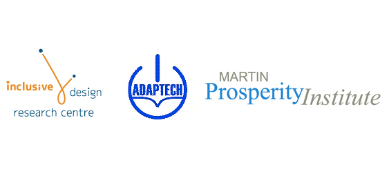

Leveraging Inclusion and Diversity as Canada's Digital Advantage
A report submitted to:
Social Sciences and Humanities Research Council of Canada
Knowledge Synthesis Grants on the Digital Economy
by
Jutta Treviranus, Inclusive Design Research Centre, OCAD University
Kevin Stolarick, and Mark Denstedt, Martin Prosperity Institute
Catherine Fichten and Jennison Ascunsion, Adaptech Research Network, Dawson College

Download accessible pdf version of this report.
The Authors
The Inclusive Design Research Centre (http://idrc.ocad.ca) is a reconstitution and academic expansion of the Adaptive Technology Resource Centre of the University of Toronto at OCAD University. Led by Jutta Treviranus, it is an internationally recognized centre of expertise in the inclusive design of emerging information and communication systems and practices. The centre conducts proactive research and development to ensure that emerging information technologies accommodate the full range of human diversity including culture, language, age, and ability. Through a large number of multi-partner, multi-sector projects, the centre has formed an extensive international network. Experts at the centre have helped to create policy, standards and exemplars in a broad range of domains including education, banking, public Web sites, edemocracy, and cultural exchange.
The Adaptech Research Network (http://adaptech.dawsoncollege.qc.ca/) consists of a team of academics, students and consumers. It conducts research on facilitators and barriers to academic success as well as on the use of computer, information, and adaptive technologies by Canadian college and university students with diverse disabilities. Based at Dawson College and affiliated with McGill University, it conducts research bilingually. The goal of the Network is to provide empirically based information to assist in decision making that ensures that new policies, software and hardware reflect the needs and concerns of a variety of individuals. The Adaptech Research Network is co-directed by Jennison Asuncion, M.A., Maria Barile, M.S.W., and Catherine Fichten, Ph.D.
The Martin Prosperity Institute (http://www.martinprosperity.org/about-the-institute) is the world's leading think-tank on the role of sub-national factors - location, place and city-regions - in global economic prosperity. Led by Director Richard Florida and Kevin Stolarick, it takes an integrated view of prosperity, looking beyond economic measures to include the importance of quality of place and the development of people's creative potential. The Institute conducts relevant research to shape debate about economic prosperity and to inform private, public and civic decision-making at the highest levels.
Contents
- Introduction - The Challenge and the Opportunity
- ICT Access Not an Option
- Increase in Incidence of Disabilities
- Current Digital Inclusion Strategies
- Potential of ICT to address a variety of access barriers
- Design For All
- Reframing our notion of Disability
- Absolute vs Relative Framing of Disability
- Shift in Accessibility Approach
- Helpful Technical Trends
- Opportunities
- The Role of Standards
- Inclusive Design as Economic Driver
- Conclusion
- References
Introduction - The Challenge and the Opportunity
Canada lags behind other nations in many of the factors shown to be necessary to build a strong digital economy. In addition, Canada has not taken the decisive national steps of other nations to ensure that the growing population with disabilities is not excluded from the digital economy. However, due to a confluence of global events and trends, the evolution of the ICT industry, and the recognized failure of conventional approaches to accessibility, Canada may have an unprecedented opportunity to establish and lead a global platform for innovation in digital inclusion that will grow in utility and importance over the coming decades. Capitalizing on the unique characteristics of Canada's business environment, current research strengths and Canada's relationship with other nations, this approach may be pivotal in reversing a vicious cycle of exclusion for a large and growing number of people in Canada and globally. It can also place Canada at the forefront of user experience design innovation - argued to be one of the next leaps the ICT industry must make to achieve greater application and adoption.
ICT Access Not an Option
An increasing number of functions of daily living occur online or through embedded computing. More frequently these are not optional entry points but the only means of accessing or participating in important functions and services.
In a quick survey of representative essential tasks it is clear that in order to participate in education, employment, civic engagement, commerce, health management, recreation and even most forms of socializing, currently requires the ability to interact with computers. An informal audit of common practices reveals the deceptively inexorable increase in our reliance on ICT based transactions. Without access to ICT we could not participate in scheduling events and meetings, we would not have access to essential public information, we would miss out on communicating with our tech-savvy children, we could not register for many postsecondary education programs and we could not apply for many jobs, to name just a few of the many daily examples. A random survey of job postings revealed that even many janitorial jobs require online applications (Monster.com, 2010).
In many cases services that were previously delivered in person are now delivered by computer-based automated systems. Examples include parking tickets, transit tickets, banking services, online purchases, online registration, applications for employment and government documents, among many others. This potentially poses difficulty for individuals with disabilities or anyone requiring some leeway in interacting with a service. Human services provide a great deal of flexibility. The human provider frequently adjusts - the delivery, the language used, the pace, the complexity of instruction, and the amount and kind of assistance provided, - to the needs of the customer.
Unfortunately many automated systems do not provide the same flexibility, understanding, or human judgment. One major downfall is the capacity to adequately and iteratively explain, assess and confirm understanding (Carmien, Dawe, et. al., 2005). Another is the ability to assess the amount of physical assistance required. This means that there are major physical, sensory and cognitive access issues with many essential services delivered online or through automated systems (United Nations, 2010).
However, computer-mediated service delivery continues to grow in prevalence and functionality and a growing number of consumers chose online services over in-person services if given a choice (PRWeb, 2010). This is in part because customers recognize that online delivery offers around-the-clock service from anywhere, without the need to wait your turn. Also, while it does not provide the desirable human attributes it also does not bring the less positive human attributes such as emotionally-based biases, discrimination, inconsistency, fatigue or impatience (unless they are designed into the system).
To reverse this new barrier for individuals with disabilities and individuals with inadequate e-literacy, computer mediated systems must offer the same responsive flexibility and adaptations as their human counterparts, or surpass them. Much user experience design work is needed to reach the ideal of usability - sufficient intuitiveness, flexibility and trustworthiness, so that the interface becomes transparent and habituated, enabling the user to focus on the task at hand - for the full diversity of users.
Increase in Incidence of Disabilities
The incidence of disabilities is steadily increasing globally. In the northern hemisphere this is largely due to aging. Seniors will surpass children aged 14 or under for the first time ever sometime between 2015 and 2021. The incidence of disability increases dramatically as we age, 37% of persons age 65 to 74 and 60% of persons age 75 and over experience a disability compared to 15% of the general population.
A second factor is improved survival rates from injury, illness or problems in pregnancy or birth. This is largely due to an improved health system globally. This is compounded by natural and manmade disasters, violence or conflict. A current instance is Haiti, which saw a sudden unexpected rise in people with disabilities.
It can be predicted with some confidence that we will not stop aging and that health care will continue to improve. It is unlikely that we will find a way to avert either natural or manmade disasters. If prognosticators are to be believed, these will only increase in the coming decades.
Current Digital Inclusion Strategies
Many people with disabilities face barriers when attempting to access standard user interfaces and ICT applications (PALS, 2006). Many age-related disabilities impede access to ICT (Oveida, 2010). Clearly, given the critical role ICT access plays in today's economy and society, this poses a growing threat to prosperity and social wellbeing. There are, however, a number of strategies and services that attempt to address digital inclusion for persons with disabilities. These are i) assistive technologies (also called alternative access systems), ii) special services to help choose, fund and train individuals with disabilities in the use of assistive technologies, and iii) legislation and policies to compel developers and producers to create accessible content and applications. Unfortunately, for various reasons, these strategies are not meeting their goals.
Assistive Technology and the Technology Gap
At the same time as there is an increase in the incidence of disabilities, there is a growing "technology gap" for individuals who have difficulty using or who cannot use standard computer systems (United Nations, 2010). Access for individuals with physical, cognitive and sensory disabilities is currently dependent on specialized technologies called assistive technologies. These assistive technologies are relied upon to fill the gap between the user interface alternatives provided by the standard software and hardware and the alternative access needs of individuals with disabilities. Legislation and policy is constructed in such a way that the responsibility of the developer of standard ICT to provide equal access ends at the point where assistive technologies begin. The assistive technologies are the financial responsibility of the user with a disability or their support system and in many cases the public purse.
Challenge of AT industry
The assistive technology industry, that bridges the gap to enable computer access, is a very tenuous and crisis-ridden industry without a viable business model. Most AT developers are small to medium enterprise companies. By virtue of their products, their customer base is limited. Given the heterogeneity of the needs of people with disabilities, the better the developer is at serving the needs of their customers the more limited this customer base becomes. At the same time they have an extremely challenging and unpredictable technical task. The products they create must interoperate with all software and hardware a computer user may wish to use. If this is not the case then individuals with disabilities will be limited to specific software applications e.g., able to only use a specific spreadsheet application.
The AT must accurately and reliably interpret the output of the computer so that the individual with a sensory or cognitive disability can perceive and understand it, and interpret the available voluntary actions of individuals with motor disabilities to accurately control and provide input to the functions of the computer (Treviranus, Petty, 2001). This requires a level of communication with the hardware and software that is frequently not built into the standard products. Many software and hardware systems are proprietary and their developers closely guard information needed by the AT. This means that the AT developer must create work-around solutions or "hacks" that are frequently very brittle.
This situation is exacerbated by a number of ICT industry characteristics that are likely to become more prevalent. Every time a software application (whether a desktop or Web application) is upgraded the AT must also be upgraded. For even a moderate set of applications this can mean several upgrades a month. Another exacerbating factor is the growing trend toward application "mashups", increasingly the development of a given application cannot be attributed to a single developer but is put together and dynamically updated from multiple sources. In attempting to trace the provenance of a given application one can find that well over 30 companies have had a hand in developing components (Digna, 2007).
Even previously gained ground in AT interoperability has eroded recently. HTML (Hypertext Markup Language), the primary language of the Web, by virtue of its structure, standard markup conventions and the inherent independence of the content and structure from the presentation or rendering was very AT "friendly." With the emergence and increased prevalence of rich internet applications which have resulted in a proliferation of non-standard interface conventions and markup, the domain of the Web and the many Web applications have also become a domain fraught with major barriers (WAI-ARIA, 2010).
Similarly as computing moves to mobile devices, means of interfacing, such as available ports for connecting alternative keyboards or displays are frequently reduced. The more disjointed the market and non-standard the system architecture or communication protocols the more difficult it is for AT developers.
All these factors contribute to a troubling trend for assistive technologies. While we can take for granted that standard ICT will continue to decrease in price, and increase in functionality, reliability and availability, the opposite is true for AT. Assistive technology is increasing in price and decreasing in functionality, reliability and availability.
This makes participation in the digital economy a difficult prospect for many Canadians. If you happen to lose your sight and you are required to use a computer for work or education, in addition to the cost of the standard software and hardware, you must also purchase assistive technology that ranges from 1,500 dollars to 13,000 and must be upgraded at least once a year (unlike many standard upgrades, these are not free). You can count on at least twice as many crashes and bugs. You can also predict that there will be many software functions that are simply not available to you and functions you have come to rely upon may disappear with the next upgrade. This is added to the other barriers you must overcome on a daily basis.
This is if you live in a country that is in North America, Western Europe, Japan, Australia or New Zealand. If you live anywhere else, assistive technology will not be available in your country, will not be maintained or serviced in your country or if it is, it will likely cost more than 50% of your annual income (G3ICT, 2010). Consequently if the standard technology is not accessible to you then you will be excluded from all computer-mediated tasks. Given that most computer technology is designed for the market that has access to AT, standard computer technology will not be accessible to you.
One potential means of addressing this technology gap is to shift the responsibility for addressing the needs of all end users to the standard technology developers. This will compel these developers to include alternative access features in their standard software and hardware (e.g., Apple has included screen reader functionality as a standard feature of its iPad, iPhone and iPod Touch technology making it directly accessible to individuals who are blind), or to engage assistive technology developers in filling the gap. This will potentially address both technical and business issues faced by the AT industry in that they will no longer rely on one of the poorest constituencies for revenue but on the ICT industry. It will also ensure that standard ICT developers will share information needed to create interoperable AT. AT development will be integrated into the standard ICT work processes.
The necessary legislative or policy reforms to effect this shift in responsibility is unlikely to occur given the powerful and organized lobbying capacity of the ICT industry combined with fear by the AT industry that they will be made redundant by alternative access features in standard technologies.
Special Service Delivery
A variety of special services exist that attempt to address the barriers to ICT access faced by people with disabilities. These may be part of more general special services (e.g., employment equity programs, special education programs, etc.) or specific to ICT access. These services assist in selecting and funding assistive technologies. In all sectors it is clear that these segregated services are neither adequate nor sustainable.
As special services these tend to be at greatest risk of budget cuts especially when other priorities come to the fore. In some cases a separate, segregated version of a mainstream service is offered (e.g., an accessible computer lab at colleges and universities). These tend to offer redundant services of less quality than the mainstream equivalent (Ascuncion, Fichten, et. al., 2010).
The weaknesses and vulnerabilities of segregated service delivery to address the technology gap can be illustrated with the example of the Ontario Assistive Devices Program. Many provinces do not have an equivalent program and the ADP program is seen as an enviable exemplar. The stated objective of the ADP program (2010) "is to provide consumer centered support and funding to Ontario residents who have long-term physical disabilities and to provide access to personalized assistive devices appropriate for the individual's basic needs." A great deal of administrative procedure, time and effort is spent ensuring that only qualified individuals receive funding. Only specific diagnostic categories qualify and these must be verified by a physician. A qualified authorizer assesses and prescribes equipment from a list of authorized devices. A product is added the list of authorized devices through a formal review process. Only special purpose devices classified as assistive technologies qualify for funding even if there are mainstream consumer-based products that address the needs far better (these also tend to be less expensive). A prescription can be renewed only every 5 years unless there is a significant change in the individual's condition. As ADP is under the jurisdiction of Health, equipment will not be funded by ADP if it is to be used primarily for work, school or sports. Most AT companies market and distribute almost exclusively to ADP authorizers in Ontario and not the general public. Most AT is highly specialized and requires complex specialized set-up. It is not designed to be bought "off-the-shelf" by consumers and primarily allied health professionals receive training on how to setup the technologies even if the functions are less complex than consumer-based technologies.
In an attempt to contain costs the diagnostic categories that qualify for ADP assistance are quite restrictive, and there are frequently calls to "tighten the definitions". This means that individuals find themselves squeezed out of the qualifying groups and this in turn results in pressure from excluded groups to add diagnostic categories e.g., autism, Asperger's Syndrome, ADHD (Ruby, 2007).
The amount of money spent on cost containment and the measures to insure that only qualified individuals receive only qualified services can be said to exceed the costs of the funding provided.
We know that access to online services is no longer an option. However, if you are an individual born with cerebral palsy, for example (and lucky enough to be a permanent resident of Ontario) and you cannot use a standard computer keyboard or pointing device but require a costly alternative keyboard; to access any of the online services you must:
- visit a doctor to verify your diagnosis and functional limitations (thereby further taxing our medical system for issues that do not concern health),
- find and book an appointment with an authorizer (these are scarce and usually only in large centres),
- wait on a waiting list until your turn comes for an assessment and then travel significant distances to attend an appointment,
- undergo an assessment that determines that you meet the qualifying characteristics (e.g., a specific level of literacy for a writing aid), will use the equipment for only the authorized activities and determines what equipment from the list of eligible devices best meets your needs ,
- await approval of your prescription,
- purchase the equipment from an authorized vendor, and
- receive training from an authorized vendor.
Because of the lengthy nature of the equipment authorization process, the eligible devices are usually not the latest model. This usually means that they are not compatible with the latest browsers, computer hardware or software applications. Because an AT prescription can only be renewed every 5 years, unless you have a significant change in diagnosis, your AT will be outdated, if not useless and obsolete, for the majority of every 5 year period. Your equipment is likely to break down or malfunction much more frequently than standard products and because you often don't have a direct relationship with the AT dealer, repair is a complex and lengthy process. Consequently many prescribed AT devices are abandoned and sit in closets as guilty reminders of time and energy wasted, adding emotional barriers to access on top of physical or sensory barriers. AT abandonment rates have been found to be as high as 75 to 80% (Simpson, Koester, LoPresti, 1999).
As stated earlier, ADP is an envied exemplar. The same weaknesses and restrictions exist for most specialized programs designed to bridge the technology gap. The US Department of Education has identified a group of students called doubly marginalized learners (Treviranus, 2010). This is a growing group of students whose needs are not met by standard education delivery but who do not qualify or do not have the administrative support to qualify for special service. It can be said that there is a similar group of doubly marginalized computer users that is growing at an alarming rate.
Legislation, Policy and Compliance
The issue of digital exclusion is also being addressed globally by a variety of legislative and policy instruments. Many of these are grounded on human rights legislation. A significant current legal instrument is the United Nations Convention on the Rights of Persons with Disabilities (United Nations, 2006). The Convention on the Rights of Persons with Disabilities and its Optional Protocol was adopted in December 2006 at the United Nations Headquarters in New York, and was opened for signature in March 2007. There were 82 signatories to the Convention, 44 signatories to the Optional Protocol, and 1 ratification of the Convention. This is the highest number of signatories in history to a UN Convention on its opening day. The Convention entered into force on May 3, 2008. At least 19 of the 50 Articles of the Convention refer to ICT accessibility. Canada is a signatory to the convention and ratified the Convention in March of 2010.
Canadian Human Rights legislation (Department of Justice Canada, 1985) has been used to legally compel organizations to ensure that ICT is accessible to people with disabilities. A recent example is a Supreme Court ruling ordering the Government of Canada to make its Web sites accessible to individuals with vision impairments (AODA Alliance, 2010). Ontario has a draft standard as part of the Accessibility for Ontarians with Disabilities Act (Ministry of Community and Social Services, 2005) that provides regulations regarding the accessibility of information and communication systems, including Web sites, mobile devices and kiosks. The Common Look and Feel (Treasury Board of Canada, 2007) which governs web sites of the Canadian government includes a section on accessibility.
All of Canada's major trading partners have legislation or policy that requires that ICT be accessible. In the United States there are at least three levels of legislation: the Americans with Disabilities Act (US Department of Justice, 1990), Section 508 of the Rehab Act (US Department of Justice, 1998), Section 255 of the Telecommunications Act and State Legislation (US Federal Communications Commission, 1996). Section 508 requires that all products and services purchased by the US government or its agencies must be accessible. The US recently enacted the "Twenty-first Century Communications and Video Accessibility Act" (GovTrack, 2010). This new regulation updates the Communications Act and establishes new safeguards for disability access to ensure that people with disabilities are not left behind as technology changes and the United States migrates to the next generation of Internet-based and digital communication technologies. The EU has recently enacted a European Disability Strategy for 2010-2011 (European Centre for the Development of Vocational Training, 2010) to address the 80 million Europeans identified as having a disability.
A document that is either referenced or restated in most legislation and policy regarding accessible ICT is the Web Content Accessibility Guidelines (WCAG) of the Web Accessibility Initiative (WAI) of the World Wide Web Consortium (W3C). This is a single set of criteria that is applied to each Web page to address the needs of the full range of people with disabilities (although it is acknowledged that cognitive access is not adequately addressed). Web pages and Web sites can claim to be WCAG compliant at one of three levels (A, AA or AAA). Legislation in many jurisdictions globally requires that public Web sites be compliant to level AA. In Italy it is possible for a middle manager to serve a jail term if a Website is not accessible under the Stanca law (Gazette of the Italian Republic, 2004).
Despite the prevalence of strong and specific legislation, numerous studies by both governments and organizations, such as the United Nations, show that most Web sites are not accessible (United Nations, 2006). This is attributed to a number of factors. The guidelines are said to be too complex and hard to understand, there are inadequate monitoring mechanisms, the guidelines and regulations do not keep up with technical development, there are inadequate supports for creating accessible Web pages and other priorities frequently take precedence.
As articulated in the recent Canadian Supreme Court ruling (AODA Alliance, 2010), the Common Look and Feel (Treasury Board of Canada, 2007) used a version of WCAG that was developed in 1998. This version prohibited the use of rich Internet applications (as ATs were not able to handle these technologies at the time the guidelines were developed). The government also instituted a program to move government services online. This cannot be practically achieved without using the interactive capabilities of rich Internet applications. Web developers in the Canadian government could choose between getting services online or adhering to accessibility requirements, but not both. Many sought exemptions from accessibility requirements resulting in inaccessible Government Web sites. While the Common Look and Feel 2.0 (Treasury Board of Canada, 2007) continued to refer to WCAG 1.0, there was technical guidance and an updated standard that provided guidelines on making Rich Internet Applications accessible (Accessibility for Rich Internet Applications and WCAG 2.0). It is likely these kinds of dilemmas that lead to the unfortunate belief that accessibility is counter to innovation and creativity.
Authoring Tools
Accompanying WCAG in the arsenal of Web Accessibility Guidelines of the W3C are the Authoring Tool Accessibility Guidelines and the User Agent Accessibility Guidelines. The User Agent Accessibility Guidelines (World Wide Web Consortium, 2002) prescribe how to create accessible browsers and players. The Authoring Tool Accessibility Guidelines (World Wide Web Consortium, 2000) provide two forms of guidance for authoring tool developers: guidance in how to make sure that authors with disabilities can use authoring tools and in how to support authors in creating accessible content using authoring tools. Much hope is being placed in improving compliance to WCAG by using ATAG. The likelihood that all Web authors will be aware of, will understand and will implement a set of technical guidelines is very remote. However most authors use authoring tools. If authoring tool developers are compelled to make their authoring tools compliant to ATAG, then even authors who are neither aware of nor motivated to create accessible Web sites will be prompted, guided and supported in making accessible Web sites. This is likely to result in much greater compliance. Unfortunately there are very few authoring tools at the moment that are compliant to ATAG.
Obtaining Digital Skills
The "Consultation Paper on a Digital Economy Strategy for Canada" stresses the need for all Canadians to gain digital skills. For individuals with disabilities, access to training in digital skills is not readily available and if available is a complex and difficult matter, despite the fact that ICT can enable a large number of previously inaccessible activities. When asked, college and university students with disabilities across Canada have expressed concerns over the availability of computers with adaptive hardware/software in their school's specialized computer laboratories, training on ICTs both on and off campus, as well as funding for ICTs for personal use (Fichten, Asuncion, Nguyen, Budd, & Amsel, 2010). Part of the complexity of digital skills training with persons with disabilities lies not only in the need to learn to use mainstream ICTs such as PowerPoint and SPSS, but often times these individuals require specialized computer technology to be able to use these technologies. For example, students with visual impairments need to use software that reads what is on the screen, for which they also need training. In earlier work, students have expressed concern over the cost of adaptive technologies and a lack in awareness of what is out there for them (Asuncion, Fichten, Fossey, & Barile, 2002). Moreover, the regulations concerning financial support for students with disabilities, including their specialized ICTs, is confusing and eligibility criteria and regulations differ from province to province (Human Resources and Skills Development Canada, 2010). Any one of these factors in isolation or taken together could act as an inhibitor(s) for these students to gain access to computers in general, and by extension, to being able to gain digital literacy skills.
Potential of ICT to address a variety of access barriers
It has often been said that the move to a digital reality and the emergence of ICT represents a double-edged sword for individuals with disabilities. On the one hand it potentially introduces new barriers, however, it is broadly recognized that there is far greater potential for ICT, if designed right, to make the world a much more accessible and inclusive place (G3ICT, 2010). Unlike buildings and standard manufactured products, digital content and tools are highly plastic and mutable. Software and digital content can be easily reconfigured in response to user needs. Computers can accept a variety of inputs and produce a variety of outputs. This can be used to both translate information from a sense that is inaccessible to a sense that is accessible (e.g., text to speech for someone that is blind) and translate an action that the user can produce into an action that the application requires (e.g., an eyebrow raise to drive a curser to press a key) (Treviranus, Petty, 200).
Because the move to the digital enables remote access, individuals who have difficulty physically navigating inaccessible environments will have greater access to online services and activities. In addition computer networks enable the pooling and sharing of resources, increasing the likelihood that there will be resources appropriate to a specific user's needs. The global network also enables finding geographically disbursed individuals with common needs and interests, thereby reducing the social isolation that frequently accompanies disabilities and facilitating the formation of advocacy groups and communities of interest.
Given these highly useful qualities, ICT can be used to make previously inaccessible activities much more accessible. The most dramatic example is access to print. One in ten Canadians have a print impairment, meaning they cannot make use of traditional print and require an alternative format. This includes individuals who are blind, have significant vision impairments, have physical disabilities that prevent them from turning pages or manipulating books and documents, and individuals who have dyslexia or other learning disabilities. Digital text, when following a few standard design principles, addresses all these issues. As long as text is machine-readable and not presented as an image of text, text-to-speech engines can speak the text for individuals who are blind or dyslexic (in the most common languages). As long as standard markup is used to structure the text (headers, chapters, paragraphs) individuals who cannot see the visual presentation to recognize parts of a document can use keyboard commands to search for and navigate to the desired place in the text. As long as standard styling mechanisms are used, the text can be restyled to increase the contrast and magnification. The layout can also be changed to reduce clutter and distraction or to make the organization of the document more apparent. There is no need to physically turn pages, this can be done with whatever controls are used to scroll and navigate onscreen. Lastly scaffolds such as glossaries, dictionaries and explanatory material can be easily at hand. The fly in this ointment is Digital Rights Management (DRM), proprietary and unconventional file formats and document security mechanisms. DRM frequently prevents creating derivatives of a document or modifying the presentation of a document both legally and technically. Markup that is not based on common standards and proprietary file formats confound assistive technologies and are not amenable to restyling for easier access. Security mechanisms frequently lock out alternative access systems used by authorized users with disabilities (W3C, 2010).
Another promising example of the difference ICT can make in the lives of individuals with disabilities is recent developments in mobile wayfinding systems. For individuals who are blind or individuals with cognitive impairments these can enable a level of independence not experienced before. In principle, ICT has the potential to act as a powerful cognitive, physical and sensory prosthesis and make the world fit to your abilities (at least the digital world).
Design for All
A much more sustainable and seamless means of providing equal access to ICT than specialized technologies is to integrate the accessibility functions directly into the standard product. This ensures that the access function is upgraded with the product, remains compatible with the product and has an interface design that is consistent with the application. Recent examples include Apple's integration of Voice Over, a text-to-speech function, into the iPad, iPhone and iPod products (Apple, 2010). Other examples include integration of voice recognition functions into the standard operating system and font resizing as a standard browser feature. One advantage of assistive technology, however, is that it provides a single, consistent and familiar interface for special accessibility functions across all applications.
Frequently when these accessibility functions are made available to the general public it becomes clear that they benefit everyone (Jacobs, 2009). This is referred to as the "digital curbcut." Curbcuts were put into sidewalks to enable wheelchairs to get on and off sidewalks, yet they benefit people pushing strollers, shopping carts or riding skateboards. Similarly text captions of speech in videos were intended for individuals who are hard of hearing or deaf but the primary users are patrons at noisy sports bars and fitness centres and spouses who wish to continue watching television while their spouse sleeps. In addition to being more sustainable, integrated accessibility features are also far less costly in the long run and, according to a study by Microsoft, are used by up to 67% of users (Microsoft, 2010).
Reframing our notion of Disability
When we take into account the many individuals who lack digital literacy it becomes clear that individuals currently classified as having disabilities are only one end of a continuum of individuals who face barriers to accessing ICT. Also marginalized or excluded from the digital domain are individuals for whom mental models such as desktops, filing systems and hierarchical tree-based data structures are foreign or incompatible with their worldview and individuals who speak languages not supported by current computers (Duncker, 2002). Keyboards are biased toward the roman alphabet, any users of other systems are at a disadvantage and must make do with awkward workarounds. Also many senior citizens do not have the advantages of digital natives but must nonetheless adjust to digital systems at a time in their lives when new learning does not come as easily (Czaja, 2010).
Absolute vs Relative Framing of Disability
A possible more useful framing of the notion of disability in the digital realm is that disability is a mismatch between the needs of the individual and the experience or service delivered. Thus it is not a personal trait but a condition brought about by a failure in user interface design or personalization (Treviranus, Roberts, 2007).
It then follows that accessibility is the capacity of the system to meet the needs of the individual in a given context for a given goal. The accessibility of a resource or resource configuration cannot be determined until the user, the goal and the context are known. A given resource or resource configuration will be accessible to one group of individuals and not another.
This approach to accessible design situates designing for people with disabilities as a seamless part of designing for diversity. There is no chance that individuals will "fall through the cracks." There is no reason or compunction for an individual to fit a specific category or classification. There is no requirement to agree upon a single definition of accessible. In creating a design there is no reason to compromise the needs of one individual for the needs of another in creating an "accessible" design.
However, this reframing challenges both conventional usability or user interface (UI) design methods as well as current frameworks for serving persons with disabilities (Treviranus, 2009). UI design methods and usability research methods are guided by data regarding the typical user. The overarching criterion for successful design is to find a single configuration that meets the needs of the greatest majority of users (Cooper, 2008). Current usability research methods gather data on the number of users who prefer or perform better with a given design. However, when applying this relative framing of accessibility, the criteria for successful design is the ability of the system to adapt to the greatest diversity of users while maintaining the same utility and reliability. Similarly this framing rejects the binary framing of disabled/non-disabled and accessible/inaccessible and the many institutional processes and conventions that have evolved to define and maintain these distinctions. It recognizes that each user is unique and given a specific context and a specific goal may face barriers to access. This naturally leads to a one-size-fits-one approach to accessibility and digital inclusion - an approach that digital systems may be able to deliver and an approach that runs parallel to current ICT design trends rather than counter to these trends.
Shift in Accessibility Approach
AccessForAll
AccessForAll is the popular term used for an accessibility approach that takes advantage of the adaptability of networks and digital systems to match individual user needs (IMS, 2008 and ISO, 2008). It is based on the relative framing of disability described above. This obviates the need to classify individuals as having disabilities or having specific classes of disabilities as all users can benefit from personalization. It also obviates classifying resources according to a binary notion of accessible or inaccessible as resources may be optimal for one user or group and a variant is optimal for another. Accessibility is therefore determined by the availability of sufficient variants or sufficient configurability in the resource to meet the diverse needs of users. This determination is made at the system level, not the resource level, allowing a diversity of configurations and freedom to explore a variety of new technologies in some variants without fear of breaking accessibility compliance.
The key to the AccessForAll approach is in delivering a personalized interface or resource that matches the user's declared needs. This is enabled by the two parts of the AccessForAll standard: 1) an extensible common language to express user needs in functional terms, and 2) an extensible common language for describing resources regarding the user needs they address. These have been standardized in both an IMS Global Learning Consortium specification and an ISO Standard (ISO 24751). In both cases Canada led the standardization process.
Implementing AccessForAll requires a set of enabling tools or services, namely:
- An application, wizard or utility to enable users to create a personal portable needs and preference profile. Multiple instances can be created for different contexts. These preference profiles can be stored and accessed through various mechanisms including but not limited to smart cards, memory sticks, secure servers, cell phones, RFID tags and other mechanisms that protect privacy and security.
- Various pools, repositories or "referatories" of resource variants with support for labeling the resources with respect to the user needs they can meet. This labeling can be programmatic (or algorithmically driven) or manual. It is also cumulative enabling more information to be added as the utility of the resource becomes apparent through use. The labeling may be on the resource itself or stored separately. The pools or sources of variants can be distributed across the Web or Internet. The resources can also be stored in the Cloud.
- A matching service that recognizes the personal preference profile and finds the appropriate resource for the appropriate context. This matching service takes into account the application, the user interface, the content, the client device, the network environment and other factors needed to provide a personalized successful experience for each user. This can take many forms including a Web service or intranet application.
- A method for addressing gaps when attempting to match user needs. This can take the form of Web services (to produce new style sheets), and demand services that recruit human and/or computer assistance in creating the necessary variants.
The AccessForAll approach has been implemented in a number of services and programs in Canada and internationally over the last decade. Among these are a program called Web4All which was used to automatically configure Community Access Points, or CAP site internet workstations across Canada to meet the specific needs of each user, including invoking and configuring assistive technologies for people with disabilities (Web4All, 2010). The personal preference profile was contained on a calling card or library smartcard. The most common implementation has been in learning object or learning resource repositories where it is used to deliver learning resources that specifically address the learner's needs (including The Inclusive Learning Exchange, TransformAble, Teacher's Domain and EU4All) (IMS, 2008). It has also been employed in delivering personalized health information for patients at time of diagnosis (PEPTalk) and in customizing user interfaces in Web Applications (MacDonald, Winter, Luke, 2010, Fluid Project, 2010).
Helpful Technical Trends
The AccessForAll personalization approach to addressing the needs of individuals with disabilities and addressing digital inclusion is well aligned with a number of current technical trends.
There is a greater prevalence of and a growing demand for personalized interfaces, individual themes and user interface options. However, surprisingly this is not as strong as in other environments or markets. It appears that the computer desktop continues to be "disputed real estate" as it were. A large part of that real estate is taken up by branding, advertisement and product-specific, inflexible content. Much of the user experience is taken over by security interactions and mass designer conceptions of what the typical user would like or user interface design as a trivial afterthought. Although we spend a large part of our personal and work life in the digital realm, we do little to make ourselves at home and make our mark on that personal space. This may change as the public becomes aware of the styling possibilities and gains confidence with exploring options. This will provide support for personalization and configurability for accessibility (Treviranus, 2009).
The goal of writing applications once and rendering on multiple devices and platforms shares the same technical requirements as personalization for accessibility. With the proliferation of mobile devices including smart phones, iPods, notebooks and tablets comes a push for development toolkits and environments that offer device independence and cross-platform compatibility (Fluid, 2010).
A powerful strategy for infusing accessibility into the software ecosystem is to build it into the foundational components used to create applications, the component toolkits, the markup languages and the file formats. The more that application development becomes a matter of assembly from a set of available components, the easier it is to include accessibility features in those components for broad proliferation. Inclusive design features have been embedded into popular software development kits such as Dojo, JQuery and GWT (Fluid, 2010). HTML 5.0 will integrate the Accessibility for Rich Internet Applications (ARIA) markup in the next release (Drupal, 2010).
Technology convergence makes the digital inclusion agenda much simpler (OECD, 2008). Accessibility strategies can be complex, there is not the capacity to train all developers in accessible design and accessibility standards take a great deal of time to develop. It becomes much simpler to support digital inclusion if there is one ICT domain rather than many. This will enable the creation of accessibility solutions and training for desktop, Web, telecommunications and broadcast ICT at the same time.
The personalization approach to designing for diversity is dependent on a large shared pool of diverse resources, a diversity of producers that contribute to that pool, and a means of federating or sharing across many distributed sources of resources. The emergence of crowd sourcing as a common practice and familiar convention across the globe can help to supply and sustain this large, diverse pool. Cloud computing helps to consolidate these resources and make them available from many locations. Lastly the maturing open source, open access community, as a means of development and distribution, provides a much more conducive platform for sharing, reusing and repurposing.
Opportunities
Demand for Inclusively Designed Services and Products
A number of factors are fueling the global demand for inclusively designed services and products, these include:
- the inexorable increase in the incidence of disabilities globally (United Nations, 2008),
- legislation and policy by all major trading partners mandating accessible services and products, in turn compelling organizations to purchase accessible products and services,
- employment equity policy within major companies that increase the need for accessible ICT to accommodate employees with disabilities,
- consolidation of disability advocacy groups globally made possible by digital networks,
- increased awareness by consumers regarding what they personally want in terms of user experience design,
- global mobility which increases the diversity of user needs in any one organization, and
- the move to mobile systems and diverse consumer devices.
Of major significance is the aging population. Profiles of the aging "Boomer" generation show that they are clear about what they need, uncompromising in their demands, intolerant of marginalization, and strong advocates with impressive spending powers and cumulative wealth despite market crisis (ZoomerMedia, 2010).
Inclusive design has gained greater global political attention lately because of the United Nations Convention on the Rights of Persons with Disabilities, the recent release of the Twenty-first Century Communications and Video Accessibility Act, and the effort in the US to refresh the Rehab 508 standard. There is a growing demand by ICT companies to standardize on a single international accessibility law modeled on Rehab 508. ICT manufacturers foresee a proliferation of accessibility legislation and do not wish to be forced to create a different product for each country or jurisdiction (JTC1-SWGA, 2010). Given international opposition to adhering to a US-centric, US-developed standard this has raised a great deal of controversy. In an attempt to allay fears by the accessibility community, the ICT industry has responded with gestures of good faith to show that they are concerned about users with disabilities.
Inclusive design that meets the needs of individuals with disabilities is functionally synonymous with flexible and adaptable design. The same design changes that make it possible for someone with a vision impairment to use a Web application makes it possible for someone with a mobile device to use the application. Similarly the design considerations that make a resource accessible to someone with a learning disability assists with translation into other languages and layout that is consistent with different languages and cultural conventions.
A small preliminary probe of requests for proposals shows that there is a steady increase in the mention of accessibility as a requirement of purchase, not only in the US, which has strong procurement accessibility legislation, but in Canada and other countries as well (MERX.com, 2010). A more comprehensive survey is needed to identify specific patterns as well as the success in purchasing accessible products and services.
Demand for Human Capacity
The growing demand for inclusively designed services and products both requires and is fueled by an increase in human capital that is knowledgeable and skilled in inclusive design. A recent scan of leading ICT firms shows that RIM, Apple, Google, Oracle, Cisco, Dell and Microsoft have all increased the size of their accessibility teams in the past year. The same is true for organizations such as governments and banks. In discussions with these organizations there is a common frustration that inclusive design skills are not part of ICT education and training and that there are too few programs focusing on inclusive design of ICT specifically (see Appendix B for a more detailed discussion).
Diversity and Innovation
To foster and sustain a strong digital economy we need innovation and creativity. There is a strong, empirically supported, correlation between diversity and inclusion and innovation or creativity. Page (2007) and others show that in the performance of groups, communities and societies "diversity trumps ability." Including diverse perspectives is generally more important than choosing the best and the brightest for effective problem solving and prediction. Page provides theoretical and empirical proofs that the power of diversity creates better groups, firms, schools and societies. His conclusions include that cognitive and cultural diversity result in faster growing and more productive cities and countries. Cass Sunstein (2006) sees the major advantage and the challenge of the Web to be the aggregation of information in order to take advantage of the widely dispersed knowledge that individuals have. Good decisions, predictions and creative problem solving are harmed by propagation of errors, unexpressed knowledge, opinion cascades and group polarization, all of which are also antithetical to diversity. For communities, social systems, teams or organizations, diversity leads to better decisions, more effective problem solving, greater creativity and innovation, better prediction, and in the long term, resilience to external challenges, and thereby, increased viability.
To achieve the levels of innovation and creativity we require to fuel our digital economy we need to enable the participation of the full diversity of perspectives. This requires an accessible digital environment and ICT developers and designers knowledgeable in inclusive design.
Not unrelated to the digital economy, if only by virtue of the larger context in which the economy must be developed, Wilkinson and Pickett (2009) show that the effects of inequality and exclusion on a society are huge. They have aggregated an impressive body of evidence to show that inequality and intolerance of diversity actually makes us ill, depressed and violent. Societies with greater inequality and marginalization or suppression of diverse groups are less healthy, physically and mentally.
Economic Impact of Inclusive Design
The economic impact of inclusive ICT systems and digital environments can be attributed to a number of positive consequences. Digital inclusion has the potential to trigger a "virtuous" cycle that would contribute to the health and wealth of Canadian society. We focus on participation in employment and higher education but other parts of the cycle include increased civic participation, greater independence and self-determination, decreased reliance on specialized services, decreased stigmatization, increased participation in volunteer activities, social inclusion to name just a few.
If steps are taken toward digital inclusion in Canada, this will increase workforce participation, help address projected labour gaps, and increase participation in higher education. These consequences will significantly increase total employment income and GDP per capita. An increase in employment among persons with disabilities due to the adoption of inclusively designed ICT alone could result in an additional $4.5 million in employment income and an additional $283 in GDP per capita. Increased higher educational attainment among persons with disabilities due to inclusively designed ICT could result in an additional $3.5 million in employment income and $203 in total GDP per capita in Canada (see Appendix C).
The Role of Standards
If the most promising approach to digital inclusion is based on personalization and designing for diversity, what is the role of standards? Are standards and standardization not counter to diversity? In fact interoperability standards are essential to fostering inclusion and supporting diversity. Metaphorically they provide a common meeting place from which members can diverge. An illustrative example would be a family shopping trip to the mall. If there is an agreed upon time and place to meet then the family members are free to pursue their diverse interests.
From a systems perspective every individual with a disability potentially represents an external system that must interoperate with the host system, as each assistive technology may be unique. This requires strong, globally adhered to interoperability standards. Fortuitously, these standards also facilitate greater interoperability between standard systems, and between standard systems and peripherals (Treviranus, Roberts, 2006).
Inclusive Design as Economic Driver
Canada's Position in the World
By common metrics Canada's ICT sector performs relatively poorly, business investment in ICT per worker lags behind many other nations, as does investment in research. Canada has very few, what are called, anchor firms that focus resources and activity in the ICT sector (with the notable exception of RIM) (Government of Canada, 2010).
From an inclusive design perspective Canada lacks a decisive national strategy on inclusive design or accessibility. By virtue of our distributed political and administrative structures, accessibility strategies in critical areas such as education and health are disjointed and inconsistent.
However, Canada has no lack of research and innovation in inclusive design and accessibility. Many assistive technologies implemented globally originated in Canada. The discontinued Rehabilitation Technology Unit of the National Research Council can be dubbed the grandfather of computer access systems for people with physical disabilities (Industry Canada, 2004). Canada played a pivotal role in initiating the Web Accessibility Initiative in the World Wide Web Consortium, through the work of the Yuri Rubinsky Insight Foundation (Paciello, 2010). Canadians play a disproportionately large role in developing accessibility standards and specifications in international standards bodies such as the International Standards Organization and the World Wide Web Consortium.
Requirements for an Industry Cluster
Michael Porter's (1990; 2000) model for cluster analysis and industry development provides a framework to explore ways in which an inclusively designed ICT industry could be grown in Canada. Porter's research identifies four conditions that are required to support the growth of an industry. The four conditions include: (1) the presence of a sufficient density of firms to create competitive conditions; (2) the availability of inputs such as skilled labour, financing, information and technology infrastructure; (3) the existence of related and supporting industries, including post-secondary institutions and NGO's; and (4) a sophisticated local demand for products and services that helps to drive innovation in the industry.
It can be argued that there exists the skeletal framework of the conditions required in Canada to grow an inclusive design ICT industry. The ICT sector has a strong presence in Ontario, British Columbia and Quebec (See Appendix B). Each of these provinces has both a significant presence of industry establishments and also a skilled workforce. In addition to this, these provinces are also home to an assortment of support firms and organizations with existing expertise in the area of inclusively designed ICT. The ageing population in Canada, and in many countries around the world, along with the growing number of persons with disabilities, presents a growing demand for inclusively designed products. In addition to this, the importance of ICT in today's society means that demand specifically for inclusively designed ICT products and services will be imminent.
A Specific Opportunity: The Global Public Inclusive Infrastructure
A framework that addresses the primary shortcomings of current accessibility and assistive technology service delivery in many sectors is gaining attention and support globally. It is currently dubbed the Global Public Inclusive Infrastructure (GPII, 2010). It builds upon work pioneered in Canada (Web4All, TILE and TransformAble) and introduced into international standards organizations by Canadian delegations and representatives (ISO 24751). It uses implementations deployed in Canada in the late 90's and early 2000's as pilots and exemplars.
It is currently coordinated by the TRACE Center at the University of Wisconsin, but with acknowledgement that technical leadership will come from Canada. In the last year several national and international organizations, governments and funding agencies have indicated their interest and support for the framework. These include:
- the US FCC (Federal Communications Commission), which mentions the framework in the recent broadband plan,
- the US Department of State, which has hosted a number of meetings to gather input from experts globally on the framework,
- the G3ICT, which featured the framework in international meetings in Washington,
- UNESCO, which as committed to facilitate the involvement of other member states, and
- the European Commission, which has included funding for research and development of the framework in the current FP7 funding competition.
In essence the GPII can be described as an App Store for user interface design which supplies the necessary ingredients or enables a seamless, personalized interface that follows you wherever you go and adjusts to the context and devices you happen to be using. The key to its success will be the ability to address the needs of the full diversity of users on the full range of devices. This requires a cooperative ICT industry.
The appeal of this framework globally is due to the promise that the GPII will address current shortcomings in meeting the needs of users with disabilities at the same time as it makes ICT systems more usable for all users. The following is a list of advantages that have been noted by policy makers, advocacy groups and industry.
- It addresses barriers caused by disabilities in an integrated way, through personalization. It views the constraints caused by disability as one of many possible constraints (e.g., environmental, background, resources), and therefore does not require that individuals with disabilities qualify for special services. This reduces the need to create classifications of disabilities and reduces the pressure on individuals with disabilities to fit into existing diagnostic categories for digital inclusion.
- This also reduces the resources invested in policing or constraining the costs of special service delivery. Under this framework gaining access to ICT does not require a medical diagnosis.
- Individuals with disabilities will not find themselves "falling through the cracks" or "doubly marginalized." Rather than advocating for recognition of a new diagnostic category, which frequently results in divisiveness, competition for scarce resources and dilution of the push toward accessibility, advocacy groups can focus on a common united agenda.
- It addresses a number of issues faced by assistive technology developers and the assistive technology industry. The framework will provide a common platform that takes care of interoperability with existing ICT at the one end and delivery to users at the other. This will free up assistive technology developers to innovate and focus on refining existing access strategies and creating new means of access for currently unmet access needs.
- It will provide mainstream ICT developers with a common platform for meeting legislative and policy-based accessibility requirements.
- It reduces global redundancy in service delivery by providing supports for pooling and sharing resources.
- It eliminates the burden on many currently marginalized users to negotiate, explain and justify the need for alternative access means.
- It addresses the digital inclusion issues of the aging demographic, the technology reluctant or adverse and individuals with cognitive, language or cultural barriers to ICT access without requiring that individuals identify as having a disability or special needs requiring a special service.
- The framework eliminates the perceived dichotomy between technical innovation and accessibility in that it encourages a diversity of approaches, new and innovative approaches and new derivatives of existing approaches.
- The framework enables optimization of the user experience to the individual needs of each user, rather than a conception of what a particular class of users requires. This has the potential to improve usability for all users.
- The strategy is responsive to new specialized user needs and will scale to help address unexpected digital divides. It enables organic growth that dynamically matches supply with demand.
- The strategy provides a global means of matching "customers" with "products," reducing the time it takes for ideas or research results to get to market.
- The framework engages both private and public sector services and open source and proprietary providers.
- The strategy will help with ICT adoption in non-ICT sectors as interfaces will be more approachable and understandable.
However there are major challenges in mounting this framework. Just a few of the challenges that alone make the plan extremely daunting include:
- maintaining and protecting the privacy of personal preference profiles,
- cooperation of the major operating system and device developers,
- supportive policies and legislation,
- a global federated search mechanism for finding resources that match a particular user need,
- compensation mechanisms that make the framework a viable business strategy for contributors, and
- means of quality maintenance, review and filtering.
Turning our Shortcomings into Strengths
While Canada has a number of shortcomings that make it an unlikely candidate to lead in various sectors of the digital economy, it can be argued that inclusive design, and specifically the personalization approach to inclusive delivery of ICT, can leverage some of our perceived weaknesses as strengths.
The strategy is dependent on a diverse pool of resources and approaches from a diverse pool of contributors and producers. The more unique the contributions and diverse the pool of resources, the better. One of Canada's perceived weaknesses is the lack of large anchor firms, enterprise solutions and bold decisive business strategies. Canada's ICT industry is primarily made up of small or medium enterprise ICT or independent ("Indie") developers and designers. This is exactly the type of producer needed to fuel strategies such as the GPII.
Canada has difficulty creating decisive national policies in the area of ICT. It is near to impossible to get agreement that will satisfy all regions and sectors. Strategies such as the GPII or AccessForAll do not require agreement on what constitutes accessible design, the platforms or conventions to use or any of the policies that seem impervious to consensus. Each region, each contributor, each sector can distinguish itself and assert its uniqueness.
Canada is not known to institute formal enterprise business structures, relying more on organic growth. This approach requires the agility and flexibility of organically organized systems. On the other hand, Canada has pioneered many systems of pooling and sharing resources (Canadian Encyclopedia, 2010).
Canada has not made the large-scale capital investments in ICT infrastructure made by other nations. The existing infrastructure is highly distributed and spotty. The GPII approach requires little capital investment and tolerates distributed and disparate delivery and participation.
Most importantly this capitalizes on Canada's diversity while at the same time addressing the ICT needs engendered by this diversity. Canada can be a primary consumer as well as contributor to this approach.
Currently there is global acknowledgement that, unlike other areas such as mobile systems, Canada leads the way in this domain. Canada can maintain this leadership by providing the platform for global research and development and in coordinating the infrastructure needed to support approaches such as the GPII. This has the potential to drive economic development and distinguish Canada as a leader in a growing market sector while at the same time addressing a critical internal need.
Conclusion
History has repeatedly confirmed that prosperity cannot be sustained unless it includes all members of a society. A sustainable digital economy strategy for Canada must include a strategy for inclusion, especially as diversity and inclusion are essential parts of the Canadian ethos. The emergence of a digital economy has brought challenges for inclusion as evidenced by the notion of the digital divide, conversely it also brings opportunities for far greater accessibility and inclusion by virtue of the plasticity and flexibility of the media. Fortuitously there is an opportunity for diversity and inclusive design to become powerful catalysts for innovation and new digital economies. While Canada must create a digital economy strategy that is inclusive of the increasing number of Canadian citizens with disabilities, all our major trading partners are also facing an aging demographic. The incidence of disabilities globally is rising, due to the aging trend but also due to advances in medicine that increase the chances of survival with disabilities and population growth (United Nations, 2010). It follows that there is a growing market for inclusively designed digital products and services globally. Canada may be uniquely positioned to meet this demand. The skills and capacity needed to address our domestic needs for inclusion can be leveraged to supply the global market. Not only does Canada have many of the precursors needed to mount a new economic cluster in inclusively designed digital products and services but an emerging approach to delivering digital inclusion is ideally suited to Canadian ICT conditions and characteristics.
References
ADP, (2010) retrieved at: http://www.health.gov.on.ca/english/public/program/adp/adp_mn.html
AODA Alliance, (2010),Court Rules That Federal Inaccessible Government Websites Violate the Constitutional Rights of Blind Canadians, http://www.aoda.ca/?p=854
APPLE, 2010, Voice Over Retrieved December 3 2010 from: http://www.apple.com/accessibility/voiceover/
Asuncion, J., Fichten, C.S., Fossey, M., & Barile, M. (2002). Dialoguing with developers and suppliers of adaptive computer technologies: Data and recommendations. Universal Access in the Information Society, 1(3), 177-196.
Asuncion, J.V., Fichten, C.S., Budd, J., Gaulin, C., Amsel, R., & Barile, M. (2010). Preliminary findings on social media use and accessibility: A Canadian perspective. Presentation at CSUN (California State University, Northridge) Technology and Persons With Disabilities Conference, Los Angeles, California. PowerPoint retrieved April 8, 2010, from http://www.jennison.ca/csun/AsuncionEtAlCSUN2010SMAC3.ppt
Bassanini, Andrea and Ekkehard, Ernst. 2002. Labour Market Institutions, Product Market Regulation, and Innovation: Cross-Country Evidence. OECD, Economics Department, January. RePEc. http://ideas.repec.org/p/oec/ecoaaa/316-en.html Retrieved December 30, 2009
Canada. Department of Justice Canada. (1985). Canadian Human Rights Act. Retrieved 3 December 2010 from the Department of Justice Canada Website: http://laws.justice.gc.ca/en/h-6
Canada. Ministry of Community and Social Services. (2005). Accessibility for Ontarians with Disabilities Act. Retrieved 3 December 2010 from the Ministry of Community and Social Services Website: http://www.aoda.ca/Canada. Treasury Board of Canada Secretariat. (2007). The Common Look and Feel. Retrieved 3 December 2010 from the Treasury Board of Canada Secretariat Website: http://www.tbs-sct.gc.ca/clf2-nsi2/index-eng.asp
Canadian Encyclopedia, (2010) Co-operative Movement, retrieved at: http://www.thecanadianencyclopedia.com/index.cfm?PgNm=TCE&Params=A1ARTA0001903
Carmien, S., Dawe, M., Fischer, G., Gorman, A., Kintsch, A. & Sullivan, J. F. (2005). Socio-technical environments supporting people with cognitive disabilities using public transportation. Transactions on Human-Computer Interaction, 12(2), 233-262.
Cooper, "Research," http://www.cooper.com/about/process/research.html , accessed 4 November 2008.
Czaja, Sara (2010) The Impact of Aging on Access to Technology, retrieved at: citeseerx.ist.psu.edu/viewdoc/download?doi=10.1.1.102.8117
Digna, Larry (2007). "Gartner: The future of portals is mashups, SOA, more aggregation". ZDNET.
Drupal 2010, Framework5 - HTML 5 and WAI-ARIA, retrieved at http://drupal.org/node/541210
Duncker, Elke, (2002), Cross-Cultural Usability of the Library Metaphor, JCDL'02, July 13-17, 2002, Portland, Oregon, USA.
European Centre for the Development of Vocational Training. (2010). European Disability Strategy 2010 2020: A Renewed Commitment to a Barrier-Free Europe. Retrieved from the European Centre for the Development of Vocational Training Website: http://www.cedefop.europa.eu/EN/news/17121.aspx
Fichten, C.S., Asuncion, J., Barile, M., Fossey, M., & De Simone, C. (2000). Access to educational and instructional computer technologies for postsecondary students with disabilities: Lessons from three empirical studies. Journal of Educational Media, 25(3), 179-201.
Fichten, C.S., Asuncion, J.V., Budd, J., Barile, M., Martiniello, N., Wolforth, J., & Amsel, R. (in press). Information and computer technology related needs of college and university students with various disabilities. ATHEN e-Journal.
Fluid (2008), "What is Fluid?', http://fluidproject.org, accessed 4 November 2008.
G3ICT, (2010), e-Accessibility Toolkit for Policy Makers, retrieved at http://g3ict.com/resource_center/toolkit
Government of Canada. (2010). Improving Canada's digital advantage strategies for sustainable prosperity: Strategies for sustainable prosperity consultation paper on a digital economy strategy for Canada. Retrieved October 15, 2010, from http://dsp-psd.pwgsc.gc.ca/collections/collection_2010/ic/Iu4-144-2010-eng.pdf
GPII, (2010), retrieved at http://gpii.org.
Harris, Jenson, "Let's Talk About Customization." http://blogs.msdn.com/jensenh/archive/2006/06/27/648269.aspx , accessed 4 November 2008.
IMS AccessForAll Metadata Specification, http://www.imsglobal.org/accessibility/, accessed 4 November 2008.
IMS, (2010) IMS AccessForAll Metadata Overview, retrieved at: http://www.imsglobal.org/accessibility/accmdv1p0/imsaccmd_oviewv1p0.html
Industry Canada (2004), Accessible News, retrieved at http://www.at-links.gc.ca/as/zx21020e.asp
ISO, (2008), "Individualized Adaptability and Accessibility in ELearning, Education and Training." ISO/IEC JTC1/SC36 International Standard 24751, parts 1 2 and 3
ISO/IEC 24751-1:2008, http://www.iso.org/iso/iso_catalogue/catalogue_tc/catalogue_detail.htm?csnumber=41521
Italy. Gazette of the Italian Republic. (2004). Stanca Law. Retrieved 3 December 2010 from: http://www.pubbliaccesso.gov.it/normative/law_20040109_n4.htm
Jacobs, S., The Electronic Curb-Cut Effect. Available online at http://www.icdri.org/technology/ecceff.htm Retrieved August, 2009.
JTC1-SWGA, (2010) retrieved at http://www.jtc1access.org/documents/swga_213/swga_213_files/textonly/swga-213.html
Kerry, B., Wilkinson, R., and Pickett, K. The Equality Trust: Evidence. Available online at http://www.equalitytrust.org.uk/why/evidence/. Retrieved August, 2009.
MacDonald, S., Winter, T., Luke, R. Roles for Information Professionals in Patient Education: Librarians' Perspective, Partnership: the Canadian Journal of Library and Information Practice and Research, Vol 5, No 1 (2010)
Martin Prosperity Institute (2010), http://www.martinprosperity.org/research-and-publications/publication/releasing-constraints
Merx.com 2010
Monster, (2010), http://www.monster.com
Nichols, M.D., and Twidale, B.M. "The usability of Open Source software," First Monday (8:1), January 2003.
Nielsen, Jakob, Usability Engineering, 1993, Academic Press/AP Professional, Cambridge, MA.
OECD, (2008) Convergence and Next Generation Networks, retrieved at http://www.oecd.org/dataoecd/25/11/40761101.pdf
Open Virtual Usability Lab, http://wiki.fluidproject.org/display/fluid/Open+Virtual+Usability+Lab, accessed 4 November 2008.
Ovadia, S. (2010). Navigating the challenges of the cloud. Behavioral & Social Sciences Librarian, 29(3), 233-236.
Paciello, M., (2010) retrieved at: http://xml.coverpages.org/yuriInsightFound.html
Page, Scott E., The Difference: How the Power of Diversity Creates Better Groups, Firms, Schools, and Societies, Princeton University Press, Princeton, 2007.
Participation and Activity Limitation Survey (PALS) 2006, Statistics Canada. Catalogue no. 89-628-X.
Project TransformAble, http://transformable.atrc.utoronto.ca/, accessed 4 November 2008.
PRWeb, (2010) http://www.prweb.com/releases/2010/09/prweb4586744.htm
Rudy, L. J., (2007) Ontario Increases Autism Funding; Is It Enough? Retrieved at http://autism.about.com/b/2007/01/20/ontario-increases-autism-funding-is-it-enough.htm
Simpson, R., Koester, H., LoPresti, E., Research in Computer Access Assessment and Intervention Physical Medicine and Rehabilitation Clinics of North America, Volume 21, Issue 1, Pages 15-32
Statistics Canada (2009) Canadian Business Patterns Survey, 2009
Statistics Canada (2010) Canadian ICT Sector Regional Analysis: ICT Sector GDP, 2008. Retrieved September 15, 2010 from http://www.ic.gc.ca/eic/site/ict-tic.nsf/eng/it07912.html
Sunstein, Cass R., Infotopia: How Many Minds Produce Knowledge, Oxford University Press US, 2006.
Tapscott, D., Wikinomics: How Mass Collaboration Changes Everything
Treviranus, (2010), The Value of Imperfection., Proceedings of the 2010 Open Education Conference, Barcelona, http://openaccess.uoc.edu/webapps/o2/bitstream/10609/4869/6/Treviranus_editat_def.pdf
Treviranus, J. (1994). Mastering Alternative Computer Access: The role of understanding, trust and automaticity. Assistive Technology: the official journal of RESNA, 6(1), 26-42.
Treviranus, J. (1994). Virtual Reality Technology and People with Disabilities. Presence: Teleoperators and Virtual Environments. MIT Press. 3(3),201-208.
Treviranus, J. (2008), "Authoring Tools," in Web Accessibility: A Foundation for Research..Editors: Yeliz Yesilada and Simon Harper. Springer, Hamburg
Treviranus, J. (2009) "You Say Tomato, I Say Tomato, Let's Not Call the Whole Thing Off "in On the Horizon. Emerald Group Publishing Limited.
Treviranus, J. & Roberts, V. (2006), Inclusive E-learning in International Handbook of Virtual Learning Environment. Editors: Joel Weiss, Jason Nolan, Peter Trifonas, Kluwar, Springer, Hamburg.
Treviranus, J. & Roberts, V. (2007), "Disability, Special Education and IT "in International Handbook of Information Technology in Primary and Secondary Education. Editors: J.M. Voogt, G. Knezek. Springer, Hamburg.
Treviranus, J., Petty, L., 2001, Computer Access, in Manual of Assistive Technology. Mosby, Chicago.
Treviranus, Jutta. The Value of Imperfection: the Wabi-Sabi Principle in Aesthetics and Learning, Proceedings | Barcelona Open Ed 2010
United Nations, 2010, http://www.un.org/disabilities/default.asp?id=18
United Nations. (2006). The Convention on the Rights of Persons with Disabilities and its Optional Protocol. Retrieved 3 December 2010 from the United Nations website: http://www.un.org/esa/socdev/enable/rights/convtexte.htm#optprotocol
United Nations. (2006). The United Nations Convention on the Rights of Persons with Disabilities. Retrieved 3 December 2010 from the United Nations Website: http://www.un.org/esa/socdev/enable/rights/convtexte.htm#convtext
United Nations (2006), United Nations Global Audit of Web Accessibility, www.un.org/esa/socdev/enable/documents/execsumnomensa.doc.
United States. GovTrack. (2010). Twenty-first Century Communications and Video Accessibility Act. Retrieved 3 December 2010 from: http://www.govtrack.us/congress/billtext.xpd?bill=h111-3101
United States. US Department of Justice. (1990). Americans with Disabilities Act. Retrieved 3 December 2010 from the US Department of Justice Website : http://www.ada.gov/
United States. US Department of Justice. (1998). Section 508 of the Rehabilitation Act. Retrieved 3 December 2010 from the US Department of Justice Website: http://www.justice.gov/crt/508/508home.php
United States. US Federal Communications Commission. (1996). Telecommunications Act Section 255. Retrieved 3 December from US Federal Communications Commission department Website: http://www.fcc.gov/cgb/consumerfacts/section255.html
US Congress (2010) Twenty-first Century Communications and Video Accessibility Act of 2009, retrieved at: http://www.govtrack.us/congress/billtext.xpd?bill=h111-3101
WAI -ARIA, (2008), Roadmap for Accessible Rich Internet Applications (WAI-ARIA Roadmap), retrieved at: http://www.w3.org/TR/wai-aria-roadmap/
Web4All, (2010) Retrieved at: http://web4all.atrc.utoronto.ca/html/english/w4a_home_e.html
Wilkinson, R., and Pickett, K., (2009). The Spirit Level: Why More Equal Societies Almost Always Do Better. Allen Lane.
World Wide Web Consortium. (2000). Authoring Tool Accessibility Guidelines. Retrieved 3 December 2010 from: http://www.w3.org/TR/WAI-AUTOOLS/
World Wide Web Consortium. (2002). User Agent Accessibility Guidelines. Retrieved 3 December 2010 from: http://www.w3.org/TR/WAI-USERAGENT/
ZoomerMedia, (2010), retrieved at http://www.zoomermag.com/